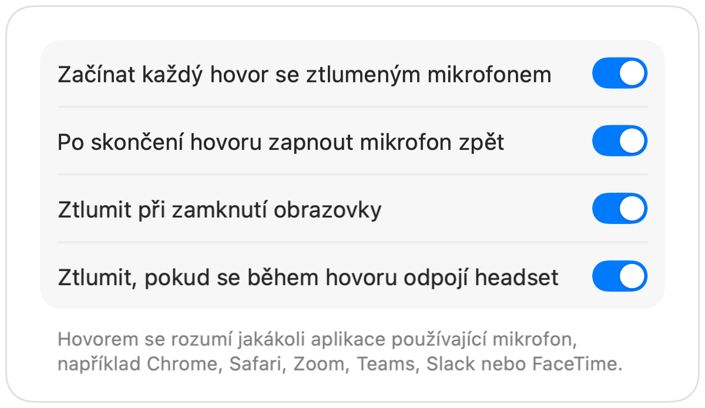

Jak ztlumit Microsoft Teams pomocí AirPods na Macu
Zkratka Teams Command-Shift-M funguje pouze v případě, že je okno aplikace Teams aktivní. Během schůzky přitom často pracujete jinde: píšete dokument, procházíte web nebo sdílíte obrazovku.
Muffle ztlumí váš mikrofon odkudkoli, jak v aplikaci Teams, tak ve webovém rozhraní. Stačí stisknout AirPods, použít jednu klávesovou zkratku nebo kliknout na řádek nabídek.
Ztlumte Teams odkudkoli
- 1
Nainstalujte Muffle a povolte přístup k mikrofonu.
- 2
Připojte se ke schůzce Teams.
- 3
Stiskněte Control-Option-M nebo stopku AirPods a ztlumte mikrofon. Ikona v řádku nabídek zčervená.
- 4
Dalším stisknutím mikrofon zapnete, případně podržte zkratku a můžete mluvit i se ztlumeným mikrofonem.

- Teams v panelu prohlížeče získají díky Muffle stejnou podporu AirPods jako Google Meet.
- Zapněte volbu „Ztlumit při zamknutí obrazovky“, aby váš mikrofon nezůstal otevřený, když od Macu odejdete.
Časté dotazy
Funguje stisknutí AirPods v aplikaci Teams?
Záleží na konkrétní verzi Teams, protože Teams mohou stisknutí zachytit samy. Klávesová zkratka Muffle a tlačítko v řádku nabídek však fungují vždy.
Ukážou Teams, že mám ztlumený mikrofon?
Nemusí to tak být. Muffle vypíná mikrofon hardwarově, takže Teams mohou ukazovat aktivní mikrofon, ale účastníci hovoru uslyší jen ticho.